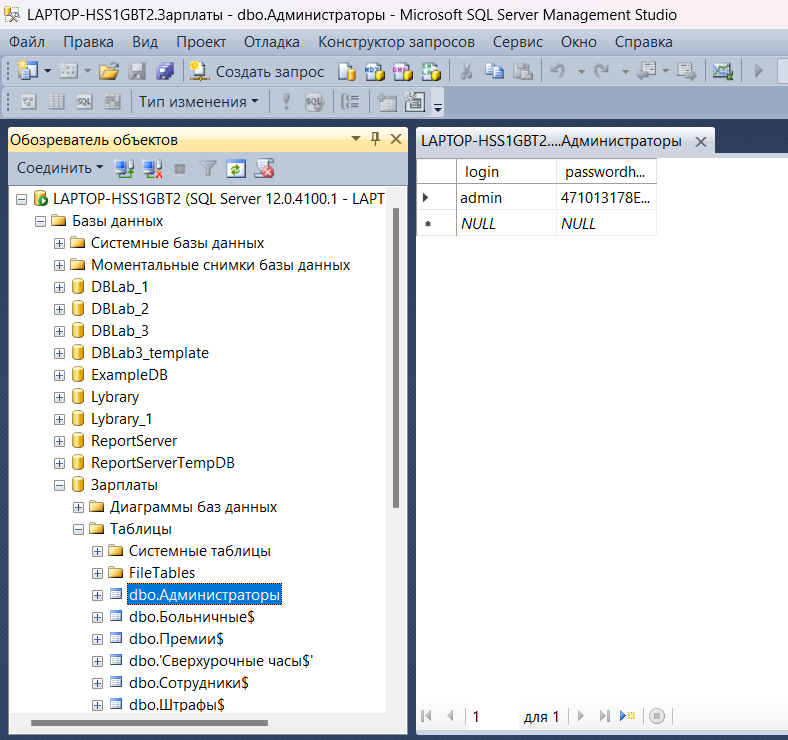
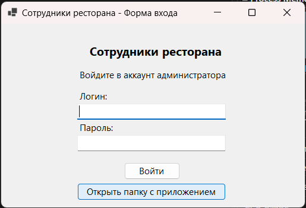
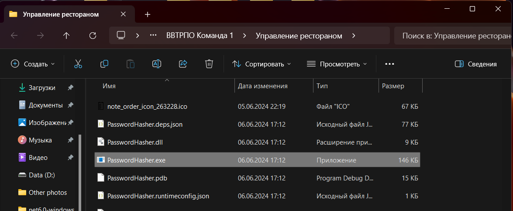
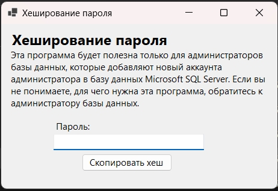
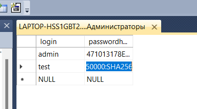

Для начала нужно открыть таблицу "Администраторы" в Microsoft SQL Server Management Studio (рис. 1).

Рисунок 1 - Таблица "Администраторы"
Теперь нужно открыть папку приложения, так как внутри этой папки находится дополнительный инструмент, который создаёт хеши паролей для администраторов. Папку приложения можно открыть, используя соответствующую кнопку в окне авторизации приложения (рис. 2).

Рисунок 2 - Кнопка открытия папки приложения
Внутри папки приложения находится инструмент "PasswordHasher.exe" (рис. 3).

Рисунок 3 - Кнопка открытия папки приложения
При открытии этого инструмента появляется окно с вводом пароля и кнопкой для копирования хеша данного пароля (рис. 4). После ввода нужного пароля и нажатия кнопки появляется сообщение, которое говорит, что хеш пароля был скопирован в буфер обмена.

Рисунок 4 - Кнопка открытия папки приложения
Вернёмся в SQL Server Management Studio. Нужно нажать на строку таблицы с надписями "NULL", ввести логин нового аккаунта и в столбец "passwordhash" вставить скопированный хеш пароля (рис. 5).

Рисунок 5 - Кнопка открытия папки приложения
Новый аккаунт администратора был создан. Теперь он может использоваться для входа в приложение.